Far too often new bricks selected for extensions or repair works fail to blend adequately with the surrounding brickwork. Likewise, differences in mortar colour can make a big difference to the overall appearance. The photos of our work below demonstrate that even in extreme cases, corrections can be made.
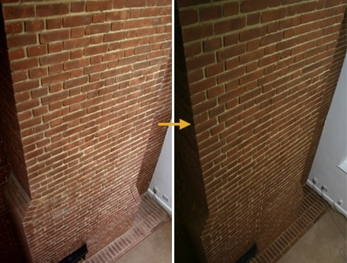
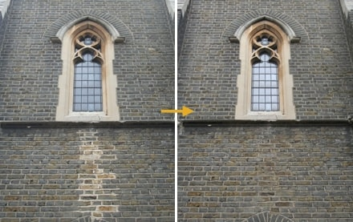
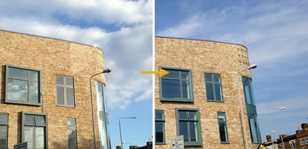
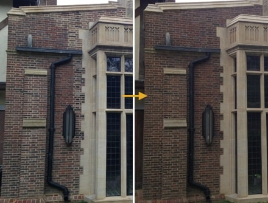
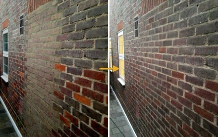
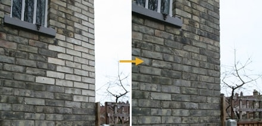
Stone & Concrete Tinting
It is possible to successfully tint other types of masonry including concrete, roof tiles, render and some types of stone. Colour inconsistencies in precast stone can usually be fixed in this way.
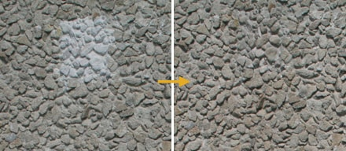
Special Projects
SHIBBOLETH AT THE TATE MODERN
It was an impressive sight to behold. Doris Salcedo created ‘Shibboleth’, a chasm that ran the entire length of the Turbine Hall with the aim of drawing attention to divisions in modern day society.
Ms Salcedo and Tate Modern did not wish to elaborate on how the piece was made, however it is sufficient to say that Brick Image Ltd were appointed to camouflage the new concrete used for the installation. Reactions from the press following the launch confirmed just how convincing our work had been.
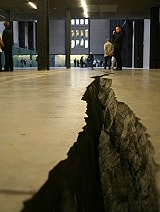
Quote from the artist:
‘I am deeply thankful for the great job you did, your work was very professional and much more. I really appreciate your knowledge, creativity, and the great attitude you had throughout those long days.’
Doris Salcedo
Quotes from the press:
{% for special-project-quote in site.data.special-project-quotes %}


 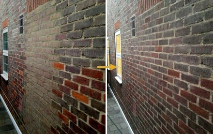
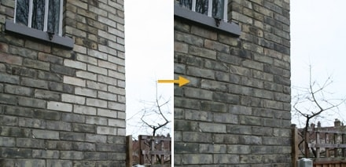
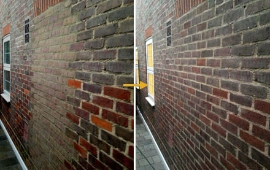
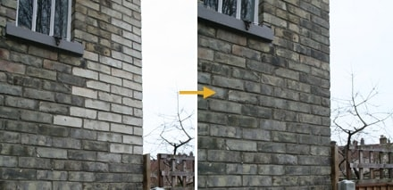